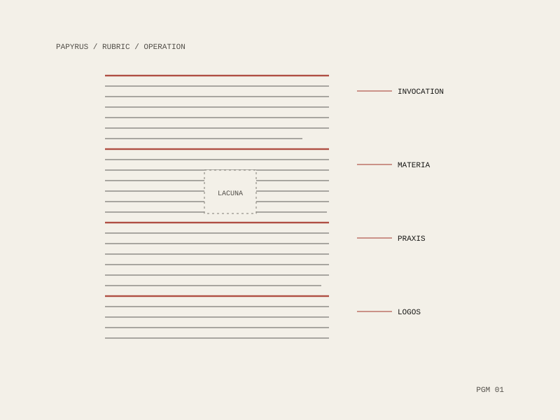
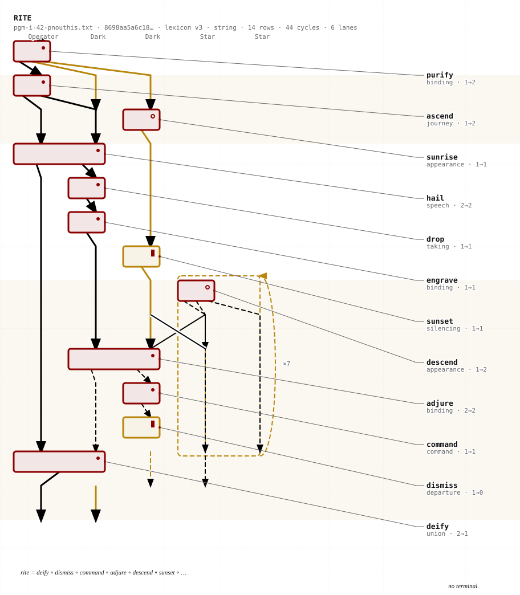

PGM Diagrams
A reading practice on the Greek Magical Papyri that treats a spell as a procedure rather than a text — asking what it takes in, what it emits, what order its operations run in, and what the surviving papyrus does not account for.


The spell that anchors it
PGM I.42–195 — the Pnouthis spell — is a rite for acquiring an assistant, the paredros. It is the one that has been carried furthest: formalised as a monoidal category and rendered as a string diagram in Diagrammatic Immanence, where the same object also emits the score, and then used as the frame for Order of the Meridian, where the assistant summoned is a machine and the week closes by giving it license to depart.
Sphinx
The diagrams and the readings around them run through Sphinx, a publication and reading series — which is where the work is argued in public rather than only drawn. A reading series is the right venue for this: a diagram of a rite is a claim about what the rite does, and a claim wants a room that can push back on it.
What the drawing is for
Drawing a rite as a diagram makes two things checkable that prose hides: the order of operations, and the typing — what each step actually consumes and produces. Once a spell is in that form, the parts that do not compose become visible, and so do the parts that were never written down.
The lacunae are left as lacunae. A gap in the papyrus is a fact about the source, and filling it silently would make the diagram say more than the manuscript does.